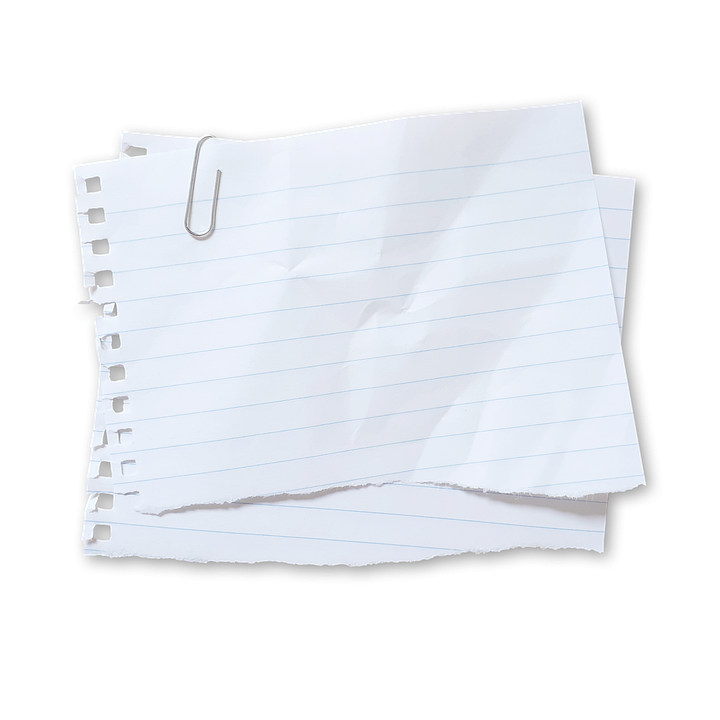

종이 분리수거 안내

종이 PAPER
#종이컵 #종이팩 #신문지
재활용: 가능
분류: 종이류
악취: 없음
분리배출 방법
- 종이 쓰레기는 흰색, 색종이, 신문지 등 종이류를 모아서 깨끗이 펴서 분리배출해주세요.
- 기름기가 묻어있거나 심하게 더러운 경우에는 재활용이 어려울 수 있으므로 기름이나 먹은 흔적 등을 제거하고 배출해주세요.
유의할 점
- 종이류는 재활용이 가능한 소중한 자원입니다. 재활용을 위해 종이 쓰레기를 잘 분리배출해주세요.
- 종이 쓰레기는 재활용 공정에서 깨진 종이 때문에 문제가 발생할 수 있으므로 깨끗이 펴서 분리배출해야 합니다.
- 플라스틱으로 코팅된 종이나 비닐류로 코팅된 종이는 종이류로 분리배출하지 않고 일반쓰레기로 버려야 합니다.